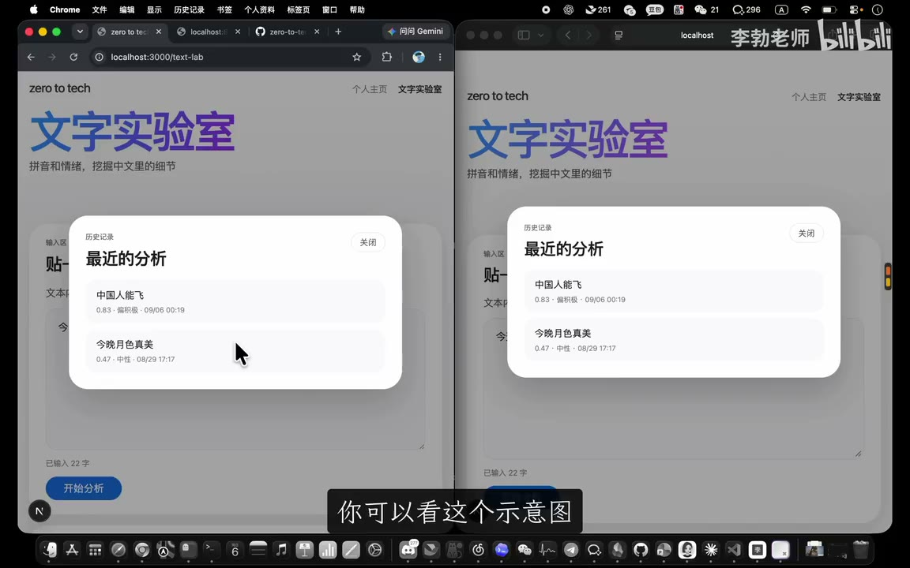

原视频 · 在线回看
点击后联网加载 B 站播放器；本地不下载整段视频。

原视频 · 在线回看
点击后联网加载 B 站播放器；本地不下载整段视频。
原标题：【零到全栈】6.6-状态与会话
UP 主：李勃老师
时长：50 分 56 秒
链接：https://www.bilibili.com/video/BV1Q6bH6xEZS/
阅读强度：深度
文字实验室已经把分析历史存入 SQLite，也能通过接口查出来。可是用 Chrome 分析几句话，再用 Safari 打开同一网站，Safari 会看到 Chrome 的历史。数据库确实保存了数据，却没有记录每条数据属于哪个会话。本节沿着这个故障，从 HTTP 无状态讲到 Cookie、会话 ID、数据库查询和验证。
两个浏览器访问同一个后端，分析结果都写入同一张表。旧的历史接口读取整张表，因此无论谁来查询，都会得到同一批记录。只把数据保存到磁盘，解决的是重启后能否找回；要把历史分开，还需要知道请求和哪一组记录有关。
状态可以理解成影响下一步的一组信息。游戏进行到第几关、剩多少血、机关是否打开，组成了当前状态；保存到存档后，下一次才能恢复。文字实验室的结果卡曾只存在浏览器页面中，刷新后消失；数据库文件可以把历史留得更久，但还要给历史附上可用于筛选的标识。
HTTP 请求携带本次请求需要的信息，协议本身不要求服务器把连续请求自动认成同一访问者。应用仍然可以将数据存入数据库、缓存或其他存储，再根据请求中的凭据找回对应状态。静态文档页面可能不需要区分访客；购物车、历史记录等功能通常需要把多次交互联系起来。
SSH 中的交互式 shell 提供了另一种体验：登录后执行 cd，再运行 pwd，shell 会保留当前工作目录；退出并重新建立会话后，原来的进程状态不再延续。这个例子帮助区分一次请求与持续运行的交互环境。
无状态请求有助于让不同服务实例处理请求，但系统要真正支持扩展和故障恢复，还需要共享存储、负载均衡及其他配套设计。把大量用户状态只放在某一台机器内存时，后续请求路由和机器故障都需要额外处理。
想象寄存包裹：柜台保存包裹，交给你一张编号纸条；取包时提供编号，柜台就能查到对应物品。文字实验室采用类似做法：第一次请求没有会话标识时，服务端生成一个 ID，随响应交给浏览器；保存分析结果时，把 ID 一起写入记录。之后浏览器带着 ID 请求历史，服务端按这个 ID 筛选。
一条链可以这样看：
标识需要足够难以猜测，碰撞概率也应足够低，因为拿到相同标识的请求会被关联到同一会话。课程示例用 Python 的 uuid.uuid4() 生成随机 UUID；它的碰撞概率很低，安全性还依赖随机源、传输和整体系统设计。
服务端通过响应头 Set-Cookie 告诉浏览器保存名字和值；浏览器在符合域名、路径、安全和请求设置等条件时，在后续请求的 Cookie 头中带回对应值。会话描述连续交互，Cookie 是浏览器保存和发送小块数据的一种机制；Cookie 也可保存主题或语言偏好，会话标识也可以通过其他方式传递。
示例设置了有效期、HttpOnly、SameSite 等属性。Max-Age=2592000 相当于 30 天；HttpOnly 限制脚本直接读取该 Cookie，SameSite 影响跨站请求时的发送。属性规定浏览器怎样处理 Cookie，请求头主要送回名字和值。线上还需结合 HTTPS、Secure、具体跨站场景和应用安全设计。
例子中前端和后端端口不同，属于跨源请求。前端发起分析和读取历史时都要配置允许携带凭据，后端 CORS 也需允许对应来源及凭据。只改一边，浏览器仍可能无法按预期传递 Cookie；具体跨站行为还受 Cookie 属性与浏览器策略影响。
数据库表增加 session_id 列，每条分析记录保存所属会话；历史查询加入按会话筛选的条件。课程还将索引调整为会话标识与创建时间的组合，服务于“先找某个会话，再按时间取最近记录”的查询。
已有表的创建语句带 IF NOT EXISTS：表已经存在时，再启动应用不会自动把新增列加进去。课堂示例里只有少量可丢弃的测试数据，删除数据库文件后重新创建。真实数据需要先备份并设计迁移，不能把删除重建当作通用升级方法。
接口层检查请求中的 Cookie：有 ID 就使用它，没有则生成并通过响应设置。分析接口把 ID 传给保存逻辑；历史接口把它传给读取逻辑。仅增加一列还不够，写入和查询都要使用这一列，才能让数据按会话分开。
先用命令行请求查看 Set-Cookie 响应头。示例中连续运行普通 curl 请求，没有配置保存和发送 Cookie，因此服务端每次都生成新 ID；curl 也可以通过显式选项管理 Cookie，并非只能用浏览器。
再在浏览器开发者工具中查看存储的 Cookie 和网络请求头：响应设置属性，后续请求带回会话值。最后回到开头的两浏览器实验：Chrome 分析“今天天气真好”，另一个浏览器分析“这个电影真好看”，各自打开历史后看到各自记录。这验证了演示中的两份会话能够分开。
这仍是匿名浏览器会话：换设备、换浏览器、清除 Cookie 或 Cookie 过期后，可能得到新 ID。它不能确认真实身份；会话 ID 泄露也可能让持有者冒用会话。正式系统还需要身份认证、授权、保护传输与其他安全措施，不能仅凭这次演示断言历史绝对私密。
课程另做了两次模型 API 调用：第一次告诉模型名字，第二次只问“我叫什么名字”，模型回答不知道。随后把先前的用户消息、助手回复和新问题一起放进 messages，模型便能利用提供的上下文回答。这个例子使用的是由调用方重新提交历史的方式。
有些产品或 API 也可能在服务端保存会话、检索相关记忆或压缩历史，具体方式由实现决定。上下文窗口有限，长对话还会涉及截断或摘要；费用取决于计费和缓存策略。关键是分清：浏览器与应用之间如何关联会话，以及应用向模型提供了哪些上下文，是两个可以分别设计的问题。
文字实验室从“所有浏览器看到同一份历史”出发，通过会话 ID、Cookie、数据库字段与筛选查询，把演示中的两份历史分开。浏览器测试证明了这条路径可用；跨设备身份和完整安全体系仍需进一步建设。
历史混在一起 ；状态与 HTTP ；会话纸条 ；Cookie ；数据库改造 ；两浏览器验证 ；模型上下文 。
数据库已经持久化，为什么还要会话 ID？如果写入时有 ID、查询时忘记筛选，会发生什么？清空 Cookie 后为何看不到原来的匿名历史？